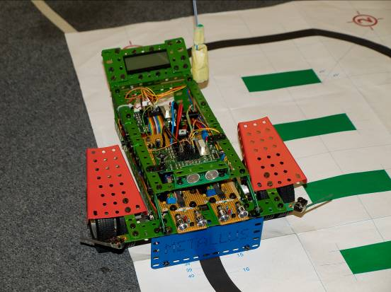

Figure 1: Robot on Black Line
|
The robot will follow a black line on a bright floor. You can adjust the brightness values to your setup. If the infrared sensors on the ground detect the black line, the robot will interrupt the main program and slightly adjust its movement (right sensor leads to a small right curve, left sensor leads to a small left curve). After correcting the course, the main program will be restarted. |
|
|